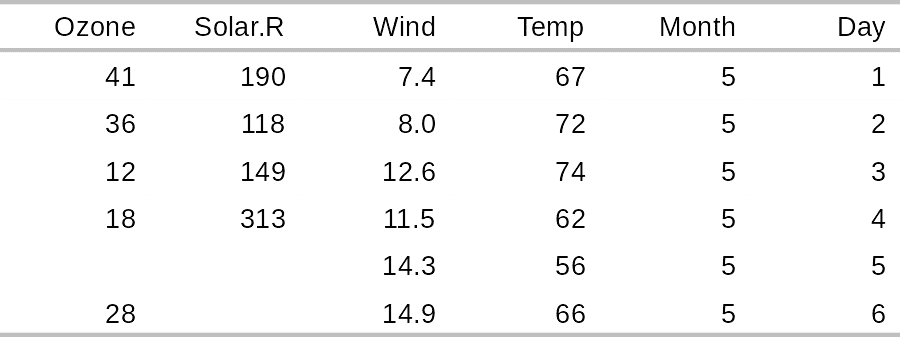
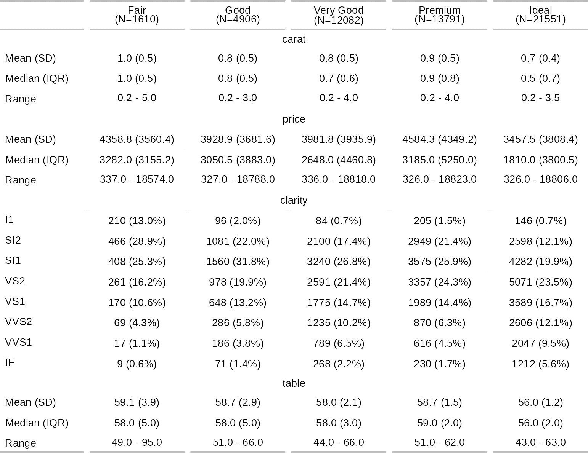

The flextable package provides a framework for easily creating tables for reporting and publications. Tables can be formatted with a set of verbs such as bold(), color(), they can receive a header of more than one line, cells can be merged or contain an image. The package makes it possible to build any table for publication from a data.frame and provides convenience function as_flextable() to convert several R objects to a flextable, such as an object returned from table() or a model.
Tables can be embedded within HTML, PDF, Word and PowerPoint documents from R Markdown and Quarto documents and within RTF or Microsoft Word or PowerPoint documents with package officer. Tables can also be exported as image files (png, svg) or combined with ggplot2 plots in patchwork layouts.
flextable(mtcars) |>
theme_vanilla() |>
save_as_docx(path = "mytable.docx")A flextable object is a data.frame representation. An API is available to let R users create tables for reporting and control their formatting properties and their layout. The package provides functions that give control over:
- header, body and footer content
- text, paragraphs, cells and border formatting of any element
- displayed values
The package also offers a set of high-level functions that allow tabular reporting of statistical models and the creation of complex cross tabulations.
Examples

Formatting can be layered on with a set of functions:
flextable(head(mtcars)) |>
highlight(i = ~ mpg < 22, j = "disp", color = "#ffe842") |>
bg(
j = c("hp", "drat", "wt"),
bg = scales::col_quantile(palette = c("wheat", "red"), domain = NULL)
) |>
add_footer_lines("The 'mtcars' dataset")
ggplot2::diamonds[, c("cut", "carat", "price", "clarity", "table")] |>
summarizor(by = c("cut")) |>
as_flextable(spread_first_col = TRUE)
Installation
install.packages("flextable")You can get the development version from GitHub:
devtools::install_github("davidgohel/flextable")Bug reports
When you file a bug report, please spend some time making it easy for us to reproduce. If you take the time to make the bug report consistent, it will be easier to fix.